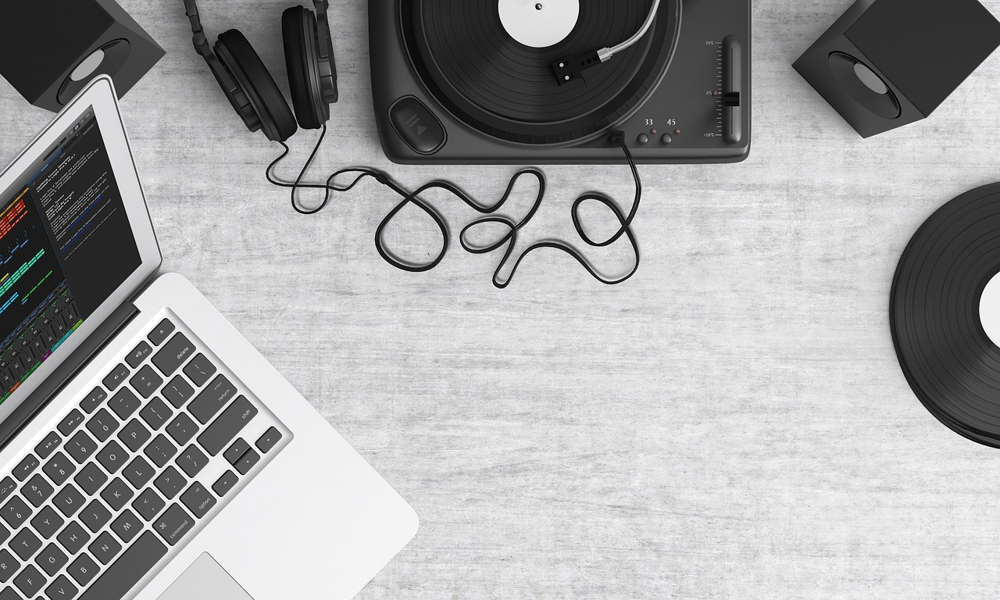

The Impact of Technology on Our Daily Lives
In this post, you could explore how technology has revolutionized various aspects of our lives. You could discuss the role of technology in improving communication (e.g., smartphones, social media), transportation (e.g., ride-sharing apps, electric vehicles), entertainment (e.g., streaming services, virtual reality), and healthcare (e.g., telemedicine, health tracking apps). You could also touch on the potential downsides or challenges posed by technology, such as privacy concerns or the digital divide.
Traveling Solo: A Guide to Self-Discovery
This post could be a personal narrative or a guide based on your experiences or research about solo travel. You could share stories or tips about planning a solo trip, navigating new places, meeting new people, and overcoming challenges on the road. Discuss how traveling alone can be a journey of self-discovery, fostering independence, resilience, and a deeper understanding of different cultures.

Healthy Eating on a Budget:
This post could provide practical advice for maintaining a healthy diet without overspending. Share tips for meal planning and preparation, smart grocery shopping (e.g., buying in bulk, choosing seasonal produce), and cooking nutritious meals at home. You could also include some budget-friendly and healthy recipes for readers to try.
The Importance of Mental Health Awareness
In this post, you could discuss why mental health awareness is crucial in today’s society. Share resources for mental health support (e.g., hotlines, counseling services) and advocate for reducing the stigma associated with mental health issues. You could also share personal stories or insights to make the topic more relatable to readers.

Sustainable Living: Small Changes, Big Impact
This post could focus on the importance of sustainable living and its impact on the environment. Provide practical tips on how individuals can reduce their environmental footprint through small changes in their daily lives (e.g., reducing waste, conserving energy, choosing sustainable products). Discuss how these small changes can collectively make a big difference in protecting our planet.

Music and Podcasts
Music streaming platforms like Spotify and Apple Music have changed the way we listen to music. We now have access to millions of songs from various genres and artists worldwide. We can create our own playlists or listen to ones curated by others. The rise of podcasts has also opened up a new form of entertainment, covering topics from true crime to education.